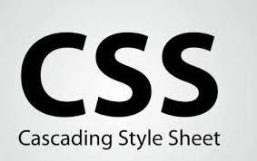

Què és el CSS?
CSS (Cascading Style Sheets) és un llenguatge de fulles d’estil que s’utilitza per controlar la
presentació i el disseny dels documents web escrits en HTML. Mentre que HTML proporciona
l’estructura del contingut, CSS defineix com s’ha de visualitzar aquest contingut en termes de
disseny, colors, tipografia, espaiat i posicionament dels elements en una pàgina.
